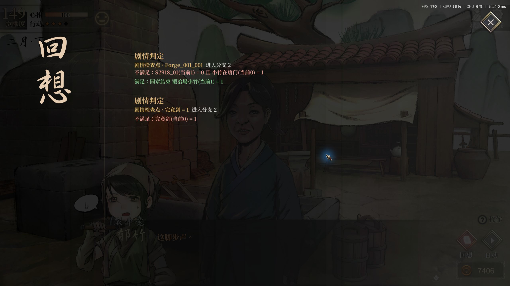

检查日期：2026-10-16；验证收尾：2026-10-17。游戏在重启时由 Steam 自动从 release_1.0.6000.2 更新至 release_1.0.6000.3。相关 StoryManager 方法的 IL 无变化；Unity 2020.3.49f1、BepInEx 6 Mono Windows x64，2560 × 1440。
用户报告整个窗口无响应，且只发生过一次。本次没有复现该卡死，原日志没有提供对应异常或调用栈，因此不能确认根因，也不能据此宣称偶发问题已彻底修复。
旧快捷键在 Update 检测滚轮后直接激活原生回想窗口。激活过程涉及 ScrollRect、画布重建与暂停；同帧 EventSystem 仍可能把滚动事件发给刚激活的列表。0.22.3 对这一潜在输入时序冲突增加保护：只排队一次上滑请求，在后续无滚轮输入帧的 LateUpdate 再次检查场景、窗口、输入框、列表和读档状态，然后通过原生 Toggle 打开。未替换回想界面，也未删减历史记录。
新增 recall_wheel_requested / recall_wheel_open_begin / recall_wheel_opened / recall_wheel_open_failed 日志，记录帧号、打开耗时和暂停状态，以便再次出现时定位。
自动回归输出 · 存档校验 · 安装校验。最终版和临时诊断版的原始运行日志保留在本地。
